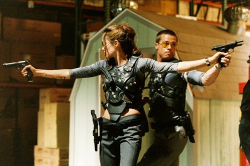

1st November 2013
While perhaps best remembered as the movie in which Angelina Jolie and Brad Pitt became star-crossed lovers, Mr. & Mrs. Smith deserves more attention than your typical A-list action movie. In particular, the film’s trenchant critique of suburbia, marriage, and the lies we tell each other every day make it a relevant, contemporary movie.
As the film is now almost 10 years old, I will be revealing some mild spoilers in this review, but it should not be enough to disturb enjoyment of the movie.
The very first scene of the movie with John (Pitt) and Jane (Jolie) Smith features them in the modern suburban torture chamber: therapy in the office of a marriage counselor. While denying that they need any kind of help (“Just a maintenance checkup” John claims) it is obvious that they are deeply uncomfortable in each other’s presence, a rawness helped by the fact that this was the first scene shot in the film.*
As told in flashback, the couple originally met under dramatic and emotionally heightened circumstances in Panama, framing both their attraction and the cause of their self-destruction. Each is an assassin for a rival company, but instinctively uses their cover as a civilian contractor from the moment they meet, successfully fooling each other for the first six years of their relationship. It is this same deceit that threatens the end of their marriage.
In this way the film is very similar to True Lies, the action-comedy film directed 10 years earlier by James Cameron. However, in that film the deceit was almost entirely one-sided, the manipulation significantly more disturbing, and (being a Cameron- Schwarzenegger film) focused much more on spectacle.
While seeing each other as equals, it quickly becomes apparent that John and Jane are very different people. Jane is reserved, precise, analytical, poised; her husband is rough-and-tumble, raw and improvisational. Every remaining bit of their energy is devoted to maintaining a successful cover: a fine house, the latest model cars. But it is only in danger and risk that they come alive: life in suburbia is boredom and ennui, and it’s clear that they can’t wait to escape the prison they have built for themselves each day.
When their respective employers discover who they work for, John and Jane are set to kill each other. While these first attempts fail, the seething resentment of both wife and husband fuels a series of mounting revenge attacks. Their destruction comes almost gleeful – you can see them actually enjoying themselves in competition with each other – and ultimately frees them from the web of lies they have spun.

Having failed in eliminating their rival, the previously inimical companies contracting John and Jane temporarily put aside their differences to end the problem of the Smiths, driving them closer together in survival instinct. The last third of the movie is the fight of John and Jane against the joined forces of their companies, culminating in a final showdown reminiscent of the climax in Butch Cassidy and the Sundance Kid.
While it is not without its faults (in particular Vincent Vaughn’s misogynistic, eternally frustrated character has become all too familiar in too many movies), Mr. & Mrs. Smith also has a significant share of charm. The chemistry between Pitt and Jolie is natural and unfeigned, and the film mixes great action sequences with a barded critique of modern suburban life, and it remains, on the whole, one of my favorite films.
Rating: ★★★★★